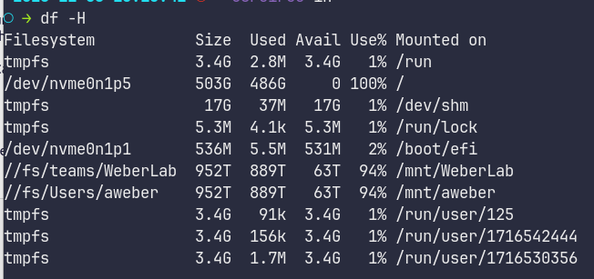
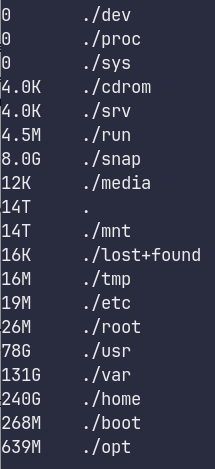

fmriprep
Intro
fMRI Prep is an automated fMRI preprocessing tool
You can visit their website here
BIDS
Your data will need to be in BIDS (Brain Imaging Data Structure) format to work properly.
If you are using blip-up/blip-down to correct for distortion, please note that currently [as of 2024] dcm2bids will create an IntendedFor JSON line that fmriprep will not understand. Please see the example config file and the note accompanying it https://bcchr.atlassian.net/wiki/spaces/WRT/pages/224133153/BIDS+Brain+Imaging+Data+Structure#Config-Examples%3A
Installation
The website recommends installing and running through Docker.
Linux/Ubuntu
Here are the steps I took to install on Ubuntu:
Install Docker
sudo apt-get update
sudo aptitude install apt-transport-https ca-certificates curl gnupg-agent software-properties-common
curl -fsSL https://download.docker.com/linux/ubuntu/gpg | sudo apt-key add -
sudo apt-key fingerprint 0EBFCD88which printed out:
"pub rsa4096 2017-02-22 [SCEA]
9DC8 5822 9FC7 DD38 854A E2D8 8D81 803C 0EBF CD88
uid [ unknown] Docker Release (CE deb) <docker@docker.com>
sub rsa4096 2017-02-22 [S]"
sudo add-apt-repository \
"deb [arch=amd64] https://download.docker.com/linux/ubuntu \
$(lsb_release -cs) \
stable"
sudo apt-get update && sudo apt-get install docker-ce docker-ce-cli containerd.io
docker run hello-worldWhich should print:
Unable to find image 'hello-world:latest' locally
latest: Pulling from library/hello-world
0e03bdcc26d7: Pull complete
Digest: sha256:4cf9c47f86df71d48364001ede3a4fcd85ae80ce02ebad74156906caff5378bc
Status: Downloaded newer image for hello-world:latestHello from Docker!
This message shows that your installation appears to be working correctly.To generate this message, Docker took the following steps:
1. The Docker client contacted the Docker daemon.
2. The Docker daemon pulled the "hello-world" image from the Docker Hub.
(amd64)
3. The Docker daemon created a new container from that image which runs the
executable that produces the output you are currently reading.
4. The Docker daemon streamed that output to the Docker client, which sent it
to your terminal.
To try something more ambitious, you can run an Ubuntu container with:
docker run -it ubuntu bashShare images, automate workflows, and more with a free Docker ID:
https://hub.docker.com/For more examples and ideas, visit:
https://docs.docker.com/get-started/
Install fmri-prep docker
python -m pip install --user --upgrade fmriprep-dockerWhich should print:
"Collecting fmriprep-docker
Downloading fmriprep_docker-20.1.3-py2.py3-none-any.whl (20.1 MB)
|████████████████████████████████| 20.1 MB 434 kB/s
Installing collected packages: fmriprep-docker
Successfully installed fmriprep-docker-20.1.3"
Before you can run frmi-prep, you also need to install Freesurfer and register for the license (it's free)
After downloading the freesurfer tar.gz file:
cd $HOME
tar -zxvpf freesurfer-linux-centos7_x86_64-7.1.1.tar.gz
export FREESURFER_HOME=$HOME/freesurfer
export SUBJECTS_DIR=$FREESURFER_HOME/subjects
source $FREESURFER_HOME/SetUpFreeSurfer.shAnd to test if it worked:
which freeviewThen type:
fmriprep-dockerWhich should print:
"Downloading. This may take a while…" and then a bunch of other stuff
If it doesn't: try restarting your computer
Usage Options:
https://fmriprep.org/en/stable/usage.html
Basic
fmriprep data/bids_root/ out/ participant -w work/All Options
usage: fmriprep [-h] [--version] [--skip_bids_validation]
[--participant-label PARTICIPANT_LABEL [PARTICIPANT_LABEL ...]]
[-t TASK_ID] [--echo-idx ECHO_IDX] [--bids-filter-file FILE]
[--anat-derivatives PATH] [--bids-database-dir PATH]
[--nprocs NPROCS] [--omp-nthreads OMP_NTHREADS]
[--mem MEMORY_GB] [--low-mem] [--use-plugin FILE]
[--anat-only] [--boilerplate_only] [--md-only-boilerplate]
[--error-on-aroma-warnings] [-v]
[--ignore {fieldmaps,slicetiming,sbref,t2w,flair} [{fieldmaps,slicetiming,sbref,t2w,flair} ...]]
[--longitudinal]
[--output-spaces [OUTPUT_SPACES [OUTPUT_SPACES ...]]]
[--bold2t1w-init {register,header}] [--bold2t1w-dof {6,9,12}]
[--force-bbr] [--force-no-bbr] [--medial-surface-nan]
[--dummy-scans DUMMY_SCANS] [--random-seed _RANDOM_SEED]
[--use-aroma]
[--aroma-melodic-dimensionality AROMA_MELODIC_DIM]
[--return-all-components]
[--fd-spike-threshold REGRESSORS_FD_TH]
[--dvars-spike-threshold REGRESSORS_DVARS_TH]
[--skull-strip-template SKULL_STRIP_TEMPLATE]
[--skull-strip-fixed-seed]
[--skull-strip-t1w {auto,skip,force}] [--fmap-bspline]
[--fmap-no-demean] [--use-syn-sdc] [--force-syn]
[--fs-license-file FILE] [--fs-subjects-dir PATH]
[--no-submm-recon] [--cifti-output [{91k,170k}] |
--fs-no-reconall] [--output-layout {bids,legacy}]
[-w WORK_DIR] [--clean-workdir] [--resource-monitor]
[--reports-only] [--config-file FILE] [--write-graph]
[--stop-on-first-crash] [--notrack]
[--debug {compcor,all} [{compcor,all} ...]] [--sloppy]
bids_dir output_dir {participant}Possibly Useful Options to Think About
--skip_bids_validation, --skip-bids-validationassume the input dataset is BIDS compliant and skip the validation
--anat-derivativesReuse the anatomical derivatives from another fMRIPrep run or calculated with an alternative processing tool (NOT RECOMMENDED).
--bids-database-dirPath to an existing PyBIDS database folder, for faster indexing (especially useful for large datasets).
--nprocs, --nthreads, --n_cpus, --n-cpusmaximum number of threads across all processes
--omp-nthreadsmaximum number of threads per-process
--mem, --mem_mb, --mem-mbupper bound memory limit for fMRIPrep processes
--ignorePossible choices: fieldmaps, slicetiming, sbref, t2w, flair
ignore selected aspects of the input dataset to disable corresponding parts of the workflow (a space delimited list)
--output-spacesStandard and non-standard spaces to resample anatomical and functional images to. Standard spaces may be specified by the form <SPACE>[:cohort-<label>][:res-<resolution>][…], where <SPACE> is a keyword designating a spatial reference, and may be followed by optional, colon-separated parameters. Non-standard spaces imply specific orientations and sampling grids. Important to note, the res-* modifier does not define the resolution used for the spatial normalization. To generate no BOLD outputs, use this option without specifying any spatial references. For further details, please check out https://fmriprep.readthedocs.io/en/20.2.1/spaces.html
--dummy-scansNumber of non steady state volumes.
--use-aromaadd ICA_AROMA to your preprocessing stream
--aroma-melodic-dimensionalityExact or maximum number of MELODIC components to estimate (positive = exact, negative = maximum)
--fd-spike-thresholdThreshold for flagging a frame as an outlier on the basis of framewise displacement
--use-syn-sdcEXPERIMENTAL: Use fieldmap-free distortion correction
--fs-license-filePath to FreeSurfer license key file. Get it (for free) by registering at https://surfer.nmr.mgh.harvard.edu/registration.html
--fs-subjects-dirPath to existing FreeSurfer subjects directory to reuse. (default: OUTPUT_DIR/freesurfer)
--fs-no-reconalldisable FreeSurfer surface preprocessing.
-w, --work-dirpath where intermediate results should be stored
--resource-monitorenable Nipype’s resource monitoring to keep track of memory and CPU usage
Example:
The files have to be in BIDS (Brain Imaging Data Structure)
For my example, I have:
derivatives/
sub-01/
anat/
sub-01_ses-1_T1w.json
sub-01_ses-1_T1w.nii.gz
func/
sub-01_ses-1_task-rest_run-1_boldAP.nii.gz
sub-01_ses-1_task-rest_run-1_AP.jsongo to the parent folder that contains the sub-01 folder in it
then type:
fmriprep-docker . ./derivatives/ participant --fs-license-file $HOME/freesurfer/license.txtThis should take a while…
When it is done, you will have a ./derivatives/ folder, and in that you will have a fmriprep/ folder, which has a sub# folder, and then anat/ and func/ folders
Options
--dummy-scans NUMBER_DUMMY_SCANSRemove first several scans if they have not reached steady state (you can see this in a timeseries of the fmri, where there is a huge drop off from the beginning. Delete these time-points)
--use-aromaadd ICA_AROMA to your preprocessing stream (default: False)
--fd-spike-threshold REGRESSORS_FD_THThreshold for flagging a frame as an outlier on the basis of framewise displacement (default: 0.5)
Confounds
After it is done running, you should have confounds that are in a .tsv file in the func/ folder
You might have a lot of columns of data:
|global_signal | global_signal_derivative1 | global_signal_derivative1_power2 | global_signal_power2 | csf | csf_derivative1 | csf_power2 | csf_derivative1_power2 | white_matter | white_matter_derivative1 | white_matter_derivative1_power2 | white_matter_power2 | csf_wm | tcompcor | std_dvars | dvars | framewise_displacement | rmsd | t_comp_cor_00 | t_comp_cor_01 | t_comp_cor_02 | t_comp_cor_03 | t_comp_cor_04 | t_comp_cor_05 | a_comp_cor_00 | a_comp_cor_01 | a_comp_cor_02 | a_comp_cor_03 | a_comp_cor_04 | a_comp_cor_05 | a_comp_cor_06 | a_comp_cor_07 | a_comp_cor_08 | a_comp_cor_09 | a_comp_cor_10 | a_comp_cor_11 | a_comp_cor_12 | a_comp_cor_13 | a_comp_cor_14 | a_comp_cor_15 | a_comp_cor_16 | a_comp_cor_17 | a_comp_cor_18 | a_comp_cor_19 | a_comp_cor_20 | a_comp_cor_21 | a_comp_cor_22 | a_comp_cor_23 | a_comp_cor_24 | a_comp_cor_25 | a_comp_cor_26 | a_comp_cor_27 | a_comp_cor_28 | a_comp_cor_29 | a_comp_cor_30 | a_comp_cor_31 | a_comp_cor_32 | a_comp_cor_33 | a_comp_cor_34 | a_comp_cor_35 | a_comp_cor_36 | a_comp_cor_37 | a_comp_cor_38 | a_comp_cor_39 | a_comp_cor_40 | a_comp_cor_41 | a_comp_cor_42 | a_comp_cor_43 | a_comp_cor_44 | a_comp_cor_45 | a_comp_cor_46 | a_comp_cor_47 | a_comp_cor_48 | a_comp_cor_49 | a_comp_cor_50 | a_comp_cor_51 | a_comp_cor_52 | a_comp_cor_53 | a_comp_cor_54 | cosine00 | cosine01 | cosine02 | cosine03 | cosine04 | cosine05 | trans_x | trans_x_derivative1 | trans_x_power2 | trans_x_derivative1_power2 | trans_y | trans_y_derivative1 | trans_y_derivative1_power2 | trans_y_power2 | trans_z | trans_z_derivative1 | trans_z_derivative1_power2 | trans_z_power2 | rot_x | rot_x_derivative1 | rot_x_derivative1_power2 | rot_x_power2 | rot_y | rot_y_derivative1 | rot_y_power2 | rot_y_derivative1_power2 | rot_z | rot_z_derivative1 | rot_z_power2 | rot_z_derivative1_power2 | motion_outlier00 | motion_outlier01 | motion_outlier02 | motion_outlier03 | motion_outlier04 | motion_outlier05 | motion_outlier06 | motion_outlier07 | motion_outlier08 | motion_outlier09 | motion_outlier10 | motion_outlier11 | motion_outlier12 | motion_outlier13 | motion_outlier14 | motion_outlier15 | motion_outlier16 | motion_outlier17 | motion_outlier18 | motion_outlier19 | motion_outlier20 | motion_outlier21 | motion_outlier22 | motion_outlier23 | motion_outlier24 | motion_outlier25 | motion_outlier26 | motion_outlier27 | motion_outlier28 | motion_outlier29 | motion_outlier30 | motion_outlier31 | motion_outlier32 | motion_outlier33 | motion_outlier34 | motion_outlier35 | motion_outlier36 | motion_outlier37 | motion_outlier38 | motion_outlier39 | motion_outlier40 | motion_outlier41 | motion_outlier42 | motion_outlier43 | motion_outlier44 | motion_outlier45 | motion_outlier46 | motion_outlier47 | motion_outlier48 | motion_outlier49 | motion_outlier50 | motion_outlier51 | motion_outlier52 | motion_outlier53 | motion_outlier54 | motion_outlier55 | motion_outlier56 | motion_outlier57 | motion_outlier58 | motion_outlier59 | motion_outlier60 | motion_outlier61 | motion_outlier62|
The most commonly used confounding time series:
Estimated head-motion parameters: trans_x, trans_y, trans_z, rot_x, rot_y, rot_z - the 6 rigid-body motion parameters (3 translations and 3 rotation), estimated relative to a reference image;
Global signals:
csf - the average signal within anatomically-derived eroded CSF mask;
white_matter - the average signal within the anatomically-derived eroded WM masks;
global_signal - the average signal within the brain mask.
Jeff says:
I regress the 6 motion correction parameters, framewise_displacement, a_comp_cor_00-a_comp_cor_05, and any nonsteady_state
Denoiser
clone this somewhere in your $PATH (or add the path to your $PATH): https://github.com/arielletambini/denoiser
Example
run_denoise.py --col_names 'a_comp_cor_00' 'a_comp_cor_01' 'a_comp_cor_02' 'a_comp_cor_03' 'a_comp_cor_04' 'a_comp_cor_05' 'framewise_displacement' 'trans_x' 'trans_y' 'trans_z' 'rot_x' 'rot_y' 'rot_z' --hp_filter .009 --lp_filter .1 sub-01_ses-01_task-rest_space-MNI152NLin2009cAsym_desc-preproc_bold.nii.gz sub-01_ses-01_task-rest_desc-confounds_timeseries.tsv denoisewhere 'denoise' is a folder I made
FSL regfilt
Alternatively you can use fsl_regfilt with numbers corresponding to columns. This this example, I am removing the components that AROMA identified (column numbers are in AROMAnoiseICs.csv):
fsl_regfilt -i sub-03_ses-02_task-rest_run-1_space-MNI152NLin2009cAsym_desc-preproc_bold.nii.gz -d sub-03_ses-02_task-rest_run-1_desc-MELODIC_mixing.tsv -o filtered_func_data_clean.nii.gz -f $(cat sub-03_ses-02_task-rest_run-1_AROMAnoiseICs.csv)Smoothing
You will need AFNI installed for this:
3dmerge -1blur_fwhm 5.0 -doall -prefix _blur.nii boldfile.nii.gzfor a 5mm smoothing
Scaling
We will also have to scale the data to ensure that the mean BOLD signal across the run is 100, so that any deflections can be expressed in percent signal change. We will also use each run’s corresponding mask that was generated by fMRIPrep:
3dTstat -prefix rm.mean_r${run}.nii r${run}_blur.nii
3dcalc -a r${run}_blur.nii -b rm.mean_r${run}.nii \
-c sub-08_task-flanker_run-${run}_space-MNI152NLin2009cAsym_res-2_desc-brain_mask.nii.gz \
-expr 'c * min(200, a/b*100)*step(a)*step(b)' \
-prefix r${run}_scale.niiResuming After a Crash:
This might be useful:
https://github.com/nipreps/fmriprep/issues/1731
Or these options:
https://fmriprep.org/en/stable/usage.html#reusing-precomputed-derivatives
Reusing a previous, partial execution of fMRIPrep
fMRIPrep will pick up where it left off a previous execution, so long as the work directory points to the same location, and this directory has not been changed/manipulated.
Using a previous run of FreeSurfer
fMRIPrep will automatically reuse previous runs of FreeSurfer if a subject directory named freesurfer/ is found in the output directory (<output_dir>/freesurfer). Reconstructions for each participant will be checked for completeness, and any missing components will be recomputed. You can use the —fs-subjects-dir flag to specify a different location to save FreeSurfer outputs. If precomputed results are found, they will be reused.
The anatomical fast-track
Starting with version 20.1.0, fMRIPrep has a command-line argument (—anat-derivatives <PATH>) to indicate a path from which the preprocessed information derived from the T1w, T2w (if present) and FLAIR (if present) images. This feature was envisioned to help process very large multi-session datasets where the anatomical images can be averaged (i.e., anatomy is not expected to vary substantially across sessions). An example where this kind of processing would be useful is My Connectome, a dataset that contains 107 sessions for a single-subject. Most of these sessions contain anatomical information which, given the design of the dataset, can be averaged across sessions as no substantial changes should happen. In other words, the anatomical information of the dataset can be considered as cross-sectional. Before version 20.1.0, preprocessing this dataset would be hard for two limitations:
if the dataset were to be processed in just one enormous job (be it in a commercial Cloud or HPC resources), the amount of data to be processed surely would exceed the time limitations per job (and/or related issues, such as restarting from where it left before); or
if the processing were split in sessions, then fMRIPrep would attempt to re-process the anatomical information for every session.
Because processing this emerging type of datasets (densely sampled neuroimaging) was impractical with fMRIPrep, the option —anat-derivatives will shortcut the whole anatomical processing.
Multi-Echo
If you have multi-echo fMRI data, you will want to run fmri-prep a little different.
Options:
--me-output-echosResources
Then you will want to use tedana
Troubleshooting:
If you are getting a Permission Denied issue after installation:
Running Out of Space:
https://forums.docker.com/t/how-do-i-change-the-docker-image-installation-directory/1169
https://briancaffey.github.io/2017/11/28/remove-root-partition-bloat-from-docker.html/
Example
Example of an error message you might get:
-bash: echo: write error: No space left on device
or
Error: writing output failed: No space left on device
How to check out much space is used:
First thing I will do is run df -H to check the state of the drives and how much space they have:

From the above screenshot, we see that /dev/nvme0n1p5 is mounted on / , and we see that is has 0 space available
Ok, next we want to see which directories are taking up the most space: [note: this took a painful amount of time]
cd / && sudo du -h --max-depth=1 | sort -n
Which gives us:

240G in /home looks big
131G in /var too
78G in /usr
repeating this process (sudo du -h --max-depth=1 | sort -n) eventually reveals that /var/lib/docker has 121G